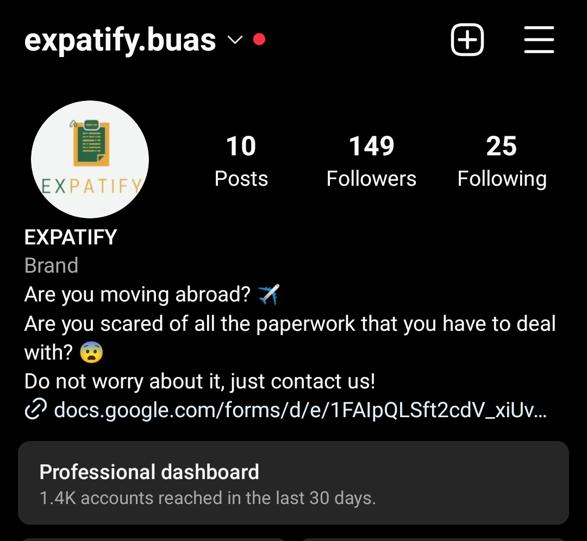
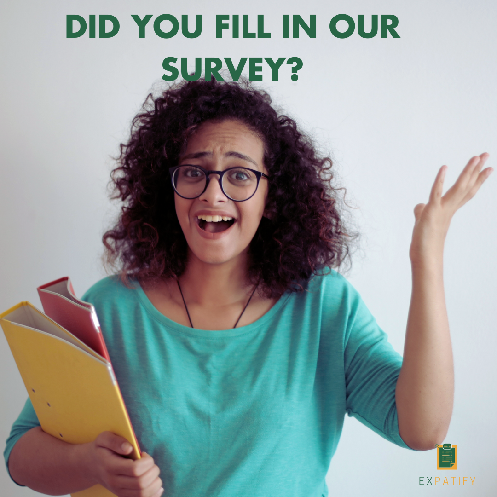
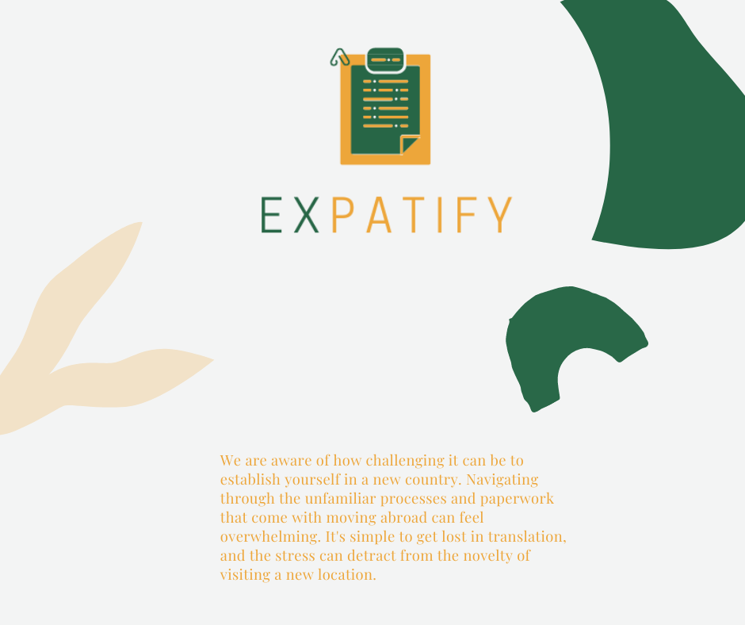
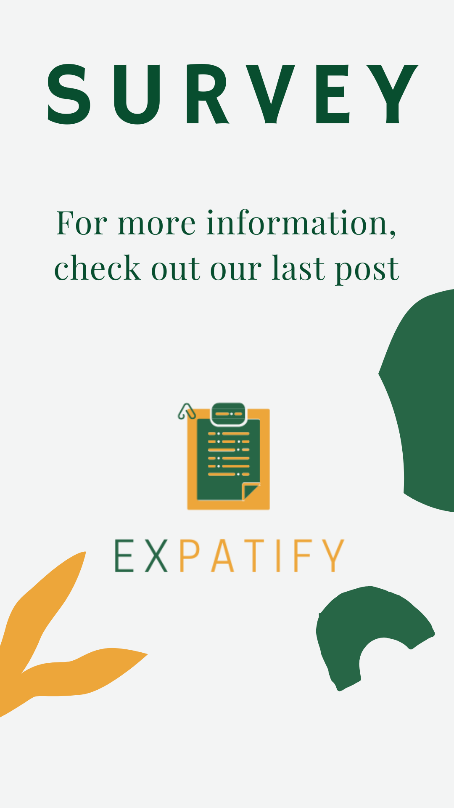

General Information
This branded website is publicly available at buas-media-interactive.github.io/my-website (please change text and hyperlink destination)
This website was created by… (only students listed below will be graded!)
- Simona Mladenova (ID: 211964)
- Julia Klempka (ID: 226480)
- Elizabet Metodieva (ID: 210784)
- David Sipeki (ID: 212545)
Content
Please clarify here the match between students and pieces of content. Make sure that you provide a link to the correct page within the website
| # | Student ID | Value | Name and link of content |
|---|---|---|---|
| 1. | 211964 | Safety, Support | Home page content, Marketing page content |
| 2. | 226480 | Connection | Content page content, Marketing page content |
| 3. | 210784 | Integrity, Reliability | Content page content, Lean Canvas 1, Lean Canvas 2 |
| 4. | 212545 | Authenticity |
Production
Design Elements
Please provide a list of design elements alongside their justifications:
-
A colour scheme (with HTML colour codes, which must be consistent with your final website)
— see the example below from the BUas brand book:
- #084E2F The green evokes a feeling of abundance and is associated with refreshment and peace, rest and security.
- #EDA63A The yellow, amber colour represent happiness, confidence, and optimism.
- #FFF2E5 Pink beige, it is not exactly, but similar to white colour. It represents a desire for comfort.;
- #0A2919 Dark green signifies the desire to always look for an opportunity to get outside into the woods or wilderness.
- Font choices
- Futura Bold – Use it in our logo, and also for headings on our website. Futura fonts have an appearance of efficiency and forwardness. When put in bold it just justifies this statement.
- Open Sans - All of the other text is easy to read. It represents, open forms and a neutral, yet friendly appearance. This connects with what our brand stands for.
- User interface patterns (e.g. grids, carousels, menu organizations etc.)
- Thumbnail - The user needs to get an overview of multiple pictures without having to download each of the full size images.
- Grid - The user can see all images and text in a grid-like structure for readability and content minification.
- Modal menu - The user needs to take an action or cancel the menu overlay until he can continue interacting with the original page
- Home link - The user can go back to the start page of the website from anywhere by clicking the Expatify logo
- Navigation bar – It remains in the top right corner and is always hidden unless you press the tree bars, at which point it displays the menu (upon clicking the menu button a JavaScript function runs that alters the style of the menu to be “display: visible” instead of “hidden” and plays a transition animation from right to left) and allows you to select which page you want to visit. We chose to place the navigation bar in the top right corner because testing revealed that people naturally seek this feature on the right side of their screen, and because most people were holding their phones, it was easier for them to reach out and click the navigation bar.
-

-

-

-

- The structure of the navigation and content (e.g. how content units are distributed across pages)
- All these elements must be justified by referring to the theory and/or vocabulary of design
- Please relate these elements to other units, for example:
- How does website design fit the values and personality of the brand?
- How does website design fit the marketing and communication strategy?
- How does website design help showcase the unique value proposal of the product?
Credits
Please provide links and/or credits for third-party elements including:
- HTML templates if these are different from this one (buas-media-interactive/prj4-group-template),
- The source code for UX patterns other than the ones provided by the “Bootstrap” library (see getbootstrap.com/docs for a list of such patterns)
- Images that were not produced by students themselves, including when crediting is not mandatory (in other words, we ask you to credit Unsplash images)
Testing Report
Please write about…
- Your testing goals – in other words, what you are trying to learn about your website?
- Your testing methods, which includes information about:
- The test’s participants (number, match with target audience, etc.)
- The test’s setting (which material is used, is it done remotely, on campus, at home, etc.)
- The test’s protocol (what instructions are given, how it is recorded, etc.)
- Your testing results, which includes information about:
- Positive and negative aspects of the UI/UX that have been identified, ranked by importance.
- Improvements that have been implemented on the final website (or that would be implemented if doing so would be too complex)
Marketing
Context of campaign and promotional activities
Our brand helps expats with all the documents that they need in order to start living their life without worrying. We had interviews with expats from different countries and ages, so we can get an insight into when and how they use social media platforms. The main channels they were using were Instagram & Facebook.
Our Objectives:
- Reach objective: By the 10th of April we aim to have an Instagram account with a follower count of 40 people and an average post/reel view of 140.
- Affective objective: We want the customer who reaches out to us to feel comforted by our service. Since the arrival to a new country can be insecure we provide some security.
- Responsive objective: We want our Instagram page to achieve a following of 40. We plan to hand out a survey where they will have the opportunity to sign up for a newsletter. With that, we aim to collect 15 email addresses.
Based on the interviews that we did at the beginning of the project, with our target audience we got the information that they are using mostly Instagram & Facebook/ Facebook groups. Our objective goal was to reach out to 40 people to follow our Instagram and Facebook pages. On Instagram, we reached a total of 149 followers, and on Facebook, we have a total of 40 likes.
Learning Points
Even though from our interviews, we have gained information that a lot of expats are using Facebook, we managed to see that Instagram was way more successful for our campaign. The post that made the most impact with over 1600 views and around 100 likes was the first reel that we posted.
- One major thing we have learned is that it is a good idea to have better communication between us in order to organise properly who is going to post what and at what time. That is when the content calendar comes in handy. One thing that we have learned was to create the content in advance so it can be easily accessible from everyone and be posted when it is scheduled.
- We realised that even though in our interviews it was stated that our target audience stated that they use Facebook, our Facebook account has not succeeded as much as our Instagram page. We also had technical problems when it comes to creating the Facebook page.
- We were positively surprised to see how posting our first reels turned out. We got a total of likes 109 and also around 1500 views.
- Based on our insights, we have reached almost 500 accounts with our reels, and 150 with our posts, and most of them are based on our followers when with the reels, most of them reached accounts that do not follow us yet.
- In order to have more success in our Facebook campaign, we believe that posting the same content as we did on Instagram would create a different impact on our insights.
Future Planning
We would start with a clear overview of the content calendar, consisting of more detailed information about what the post is going to be. Since we have better insights now when our target audience is more active, we will make sure to post around those certain hours.
- Make a plan: The marketing team can ensure that everything is posted on time and that there is enough time for review and revision by creating content at least one week in advance. It also allows for the inclusion of current events or news that may be of interest to the brand or audience.
- Marketing efforts should be examined on a regular basis to determine what is and is not working. This means tracking metrics such as engagement and conversion rates, as well as soliciting audience feedback. Based on this data, the marketing strategy can be tweaked as needed to achieve the best results.
- Use multiple channels: It is critical to have a presence on multiple channels where your target audience is active on social media platforms. Each channel may necessitate a different type of content and messaging, so the approach must be tailored accordingly.
Describe in detail your future recommendations if the campaign would be continued.
Detail and describe clearly the process of what your would do differently based on you experience on this project related to the marketing assignment.
Professionalism
Present and organize below all social media/online activities of the campaign. Context and material are according to the brand style, image, and vision. Images on the site are of high-quality, readable, and properly designed.
- 
-

- 
-

- 
- 
-

Management
Lean Canvas
Fill in at least 2 bullet points per building block and according to the rubrics.
Problem
- List your top 3 problems you solve for your target group(s).
- Describe briefly how the problems are solved now (existing alternatives).
Solution
- Outline the brand solution(s) you have for the above problem(s).
Customer segments
- List your target customers and/or users.
- Describe briefly the characteristics of your ideal customer (early adopter, brand persona).
Unique value proposition
- With a single, clear compelling message, state why your brand idea is different and worth paying attention to.
Unfair advantage
- List the aspect(s) of your brand that cannot easily be copied, also called your sustainable competitive advantage(s).
Channels
- List your main path to customers.
- How do you reach them? What channel(s) do you use.
Key metrics
- List the key numbers that tell you how your brand experience is doing.
- For example amount of users, downloads, visitors, subscriptions, sales etc. Numbers you are able to measure.
Revenue streams
- List your sources of revenue: describe the revenue model and the (different) revenue stream(s).
Cost structure
- List your main costs: define the fixed and variable costs.
- Calculate the cost per unit.
Services/products
- State what your product and/or service is and how this contributes to your unique value proposition.
- Clarify the fit between the product/service developed and the brand identity/brand image.
Validation of Assumptions
Write a reflection on the choices made in creating choosing the trademark, including an analysis of the existing alternatives.
Appendix
Please use the list below to provide links to evidence for all parts of your justication. Please double-check all links before delivering the website. Do not hesitate to refer to these numbers above.